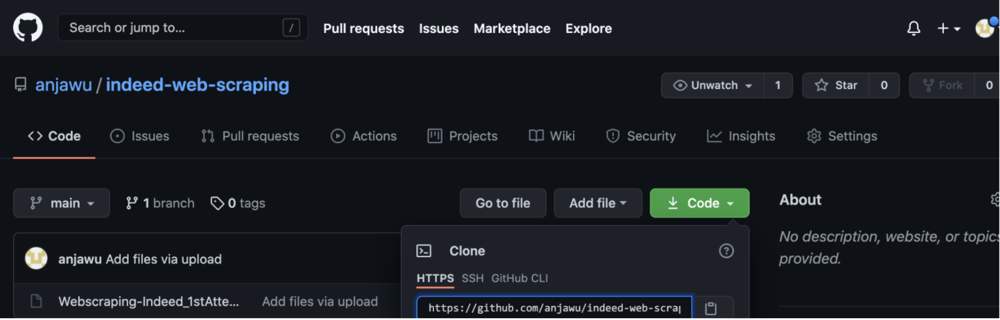

- On GitHub: go to the repository: click the green button “Code”
 - Copy the HTTPS writing and in your local terminal type
git clone HTTPSname
- Now you have the repository on your local machine

Thank you for visiting my website!
GitHub
Here are some basic things I learnt to do from the terminal:
In case you missed it on GitHub, here are the steps to take to create a new repository from the command line.
git init
git commit -m “first commit”
git branch -M main
git remote add origin https://github.com/username/repositoryname.git
git push -u origin main
In case you missed it on GitHub, here are the steps to take to create a new repository from the command line.
git remote add origin https://github.com/username/repositoryname.git
git branch -M main
git push -u origin main
I had a problem with connecting with my GitHub from my terminal due to incorrect credentials. This stack overflow article helped!
First I actually wanted to check out what the credentials I had were:
git config --global --edit
git commit --amend --reset-author
git config --global --unset user.password
git config --global credential.helper osxkeychain ()
**Update: GitHub implemented personal tokens, so to set it up go to Personal Token Setup.
From there all you have to do is enter your personal token instead of a password. Don’t forget that they expire and you will have to update them every so often.